地政学
フリータウンは大西洋岸の天然港に置かれた首都で、西アフリカ海上交通、人道支援、鉱物輸出、地域外交を受け止めます。内戦後の国家再建と選挙政治も、この港町の制度と街路に重なり、周辺国との関係も映します。
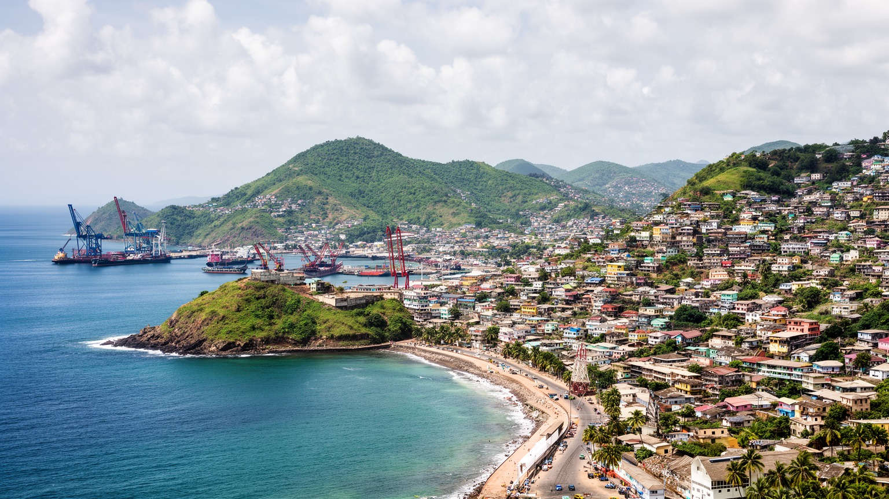
🇸🇱 シエラレオネ / 首都 / World City Atlas
世界有数の天然港を抱く半島の首都です。解放奴隷の記憶、港湾、官庁、市場、丘陵住宅、宗教、海辺の観光、雨季の災害リスクが近い距離で重なります。
都市の骨格
フリータウンはシエラレオネ川河口の深い天然港と、急な丘陵の住宅地に挟まれます。港、官庁、市場、海岸道路、斜面の集落が近接し、雨季の水と土砂が都市運営の前提になります。
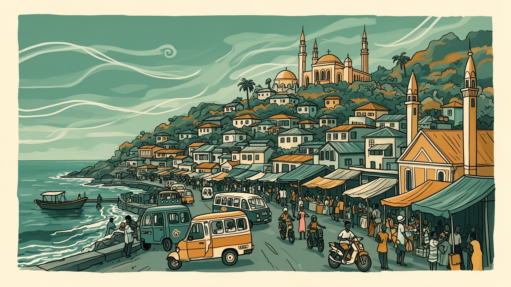
フリータウンは大西洋岸の天然港に置かれた首都で、西アフリカ海上交通、人道支援、鉱物輸出、地域外交を受け止めます。内戦後の国家再建と選挙政治も、この港町の制度と街路に重なり、周辺国との関係も映します。
港湾、行政、商業、漁業、建設、交通、教育、観光が雇用の柱です。大型船の物流と市場の小商いが並び、魚売り、露店、配達、バイクタクシー、若者の技能訓練が家計と物価を毎日左右します。強く響きます。港で。
クレオ文化、テムネ、メンデなど多様な民族の暮らしが、英語、クリオ語、教会、モスク、音楽、食卓に重なります。礼拝、サッカー、ラジオ、SNS、祝祭の料理が、世代を越えて街の礼節を育てます。港にも日々深くも。
旅行者はコットンツリー、海岸、バンス島、キングスヤード門、市場を巡ります。住民には家賃、交通、停電、水、衛生、斜面災害が身近で、子どもの通学や高齢者の通院も天候と道路に左右されます。毎日です。強く。
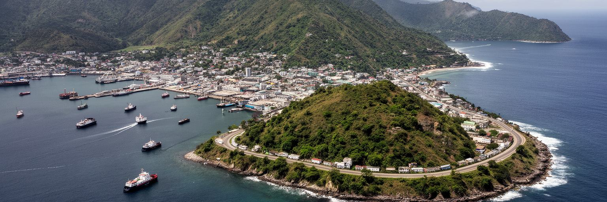
フリータウンの位置を理解するには、まず港と半島を同時に見る必要があります。シエラレオネ川の河口に開く深い入り江は、長く船を受け入れてきた天然港で、首都の政治、物流、移動、食料供給を支えています。背後には急な丘陵が迫り、住宅地は谷筋や斜面へ広がります。港の近くには官庁、市場、倉庫、フェリー、バスターミナルが集まり、短い距離に国の入口と日常の買い物が並びます。この地形は美しい海景を生みますが、都市運営には厳しい条件も与えます。雨季には斜面から水が流れ、排水路が詰まると低地の道路や市場がすぐ影響を受けます。山側の森林が減れば、土砂災害や洪水の危険も高まります。海に向かって開かれた首都でありながら、住民の毎日は水、傾斜、道路幅、港の混雑に左右されます。フリータウンの都市性は、港湾の大きなスケールと、斜面に張り付く住宅の細かな生活が隣り合うところにあります。海風と丘の眺めは都市の魅力ですが、同じ地形が移動、住宅、安全、インフラ費用を重くします。だからこの首都を読む時は、港の戦略性だけでなく、雨の日に人がどの道を通り、どこに水が集まり、どの斜面が危ないのかまで見ることが大切です。地形そのものが、政治と暮らしの土台になっています。朝の荷揚げ、学校への坂道、フェリーの待ち時間まで、港と丘の関係が一日の速度を決めています。
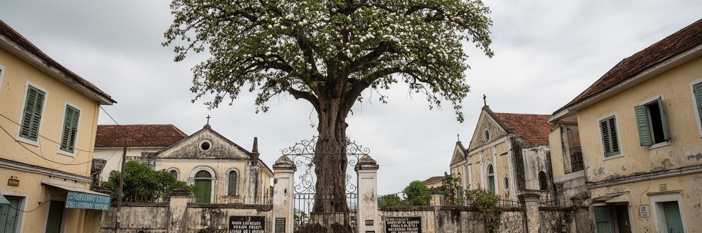
フリータウンという名前は、都市の歴史を強く示しています。十八世紀末、解放されたアフリカ系の人びとやノバスコシア、ジャマイカから移った人びとがこの地に定住し、のちにクレオ社会が形成されました。奴隷貿易、植民地支配、宣教、教育、海上交通の記憶は、街路名、教会、墓地、学校、家族史、クリオ語に残っています。コットンツリーやキングスヤード門、バンス島への記憶は、観光名所である前に、移送、喪失、帰還、再出発を考える手がかりです。自由の名を持つ都市であっても、その歴史は単純な解放の物語ではありません。植民地行政の序列、沿岸と内陸の関係、民族間の緊張、教育を受けた都市層と地方社会の距離も含んでいます。現在のフリータウンでは、教会の鐘、モスクの礼拝、学校の制服、市場の会話、海外移住者との連絡が、長い大西洋史と日常を結びます。過去を記念することは、古い建物を保存するだけではありません。奴隷制の暴力を忘れず、そこで生まれた言語、音楽、教育、宗教、家族のつながりを今の都市生活の中で読み直すことです。旅行者が歴史地区を歩く時、写真に残る木や門だけでなく、その場所が誰の痛みと希望を受け止めてきたのかを考える必要があります。フリータウンの記憶は、名前の明るさの背後にある複雑な経験を語っています。学校で語られる歴史も、家族の姓や墓地の名前と結びついています。
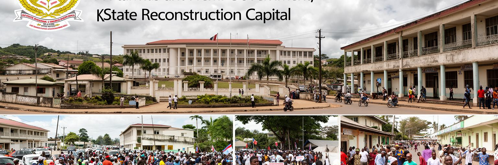
フリータウンはシエラレオネの政府、議会、裁判所、省庁、外交機関、報道機関が集まる政治の中心です。内戦の経験を持つ国にとって、首都の制度は単なる行政手続きではなく、和平、選挙、司法、汚職対策、地方分権、若者の将来をめぐる信頼の場になります。大統領府や省庁で決まる予算は、道路、学校、病院、港、鉱山地域、農村へ影響します。首都には国際機関やNGOも多く、保健、教育、防災、ジェンダー、雇用支援などの計画がここから動きます。一方で、政治の中心がフリータウンに集中しすぎると、地方の声が届きにくくなります。選挙の時期には政党、ラジオ、SNS、集会、街路の会話が熱を帯び、都市の緊張も高まります。制度への信頼は、遠い政策文書だけでなく、役所で手続きが進むか、警察が公平か、公共工事が実際に完成するか、若者に仕事が見えるかで測られます。フリータウンの政治性は、官庁街の建物よりも、市民が国家をどれだけ身近に信じられるかに現れます。港湾収入や鉱物資源、国際支援が集まる都市だからこそ、透明性と説明責任は重要です。内戦後の国家再建は完了した過去ではなく、選挙のたび、災害のたび、予算のたびに試されます。首都はその試験の舞台であり、住民の生活が政治の結果を最も早く感じる場所でもあります。市民の待ち時間や窓口の応対にも、国家への信頼が表れます。
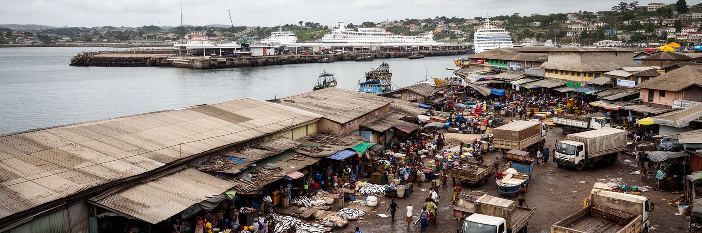
フリータウンの経済は、港湾と市場の結びつきから見えてきます。大型船が燃料、食料、建材、消費財、援助物資を運び、国の輸出入を支えます。港の周辺には通関、倉庫、運送、修理、警備、食堂、両替、仲買の仕事が集まり、海側の物流が市内の商いへ流れ込みます。魚市場では漁民、加工する人、売り手、運搬する若者、食堂が動き、燻した魚や揚げ物の匂いが朝の通りに広がります。ダイヤモンド、鉄鉱石、農産物、輸入米、燃料などの動きも、首都の物価や雇用に影響します。ただし、港湾経済の利益がすべての住民に均等に届くわけではありません。非公式の小商いは多くの家族を支えますが、雨、警察の取り締まり、交通混雑、衛生、信用不足に弱いです。若者は荷運び、バイクタクシー、露店、建設、サービス業で働くことが多く、ラジオやSNSで価格、求人、船の到着情報を追います。港が混めば物流費が上がり、燃料や食品価格にも響きます。逆に港の効率が上がっても、低賃金労働や住環境が改善しなければ都市の豊かさは実感しにくくなります。フリータウンの港は国の経済の入口ですが、そこから市場、台所、通学費、家賃へどうつながるかを見る必要があります。海に面した巨大な物流と、路上の小さな商いが同じ都市を動かしていることが、この首都の経済の実態です。買い物袋の重さにも港の調子が表れます。
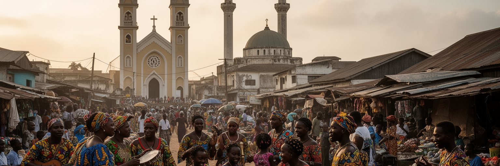
フリータウンでは、宗教と文化が日常のリズムを作っています。教会、モスク、学校、家族の集まり、葬儀、結婚式、音楽、サッカー、ラジオ、食卓が、都市の共同体をつないでいます。クレオ文化は解放奴隷の歴史、英語圏の教育、キリスト教、海上交通、大西洋の移動を背景に育ちましたが、現在の都市はテムネ、メンデ、リンバ、フラ、マンディンゴなど多くの民族の暮らしも含みます。クリオ語は異なる出自の人びとを結ぶ共通語として機能し、バス、店、学校、政治の会話に広く響きます。宗教は対立の線ではなく、日常の助け合い、教育、慈善、病気や葬儀の支援として働く場面が多いです。祭礼や礼拝の日には服装、音楽、料理、交通、人の流れが変わり、首都の時間が宗教暦に沿って動きます。ジョロフライス、キャッサバリーフ、魚の煮込み、甘い飲み物は家族行事や店先の会話を豊かにし、夜にはアフロポップや教会音楽、クラブの低音が丘へ届きます。近所で互いに子どもを見守り、送金を分け合い、葬儀費用を集め、学校費を工面する日常の関係も文化です。高齢者が語る家族史や若者のダンス動画も、街の記憶をつなぎます。フリータウンの多様性は、きれいな標語ではなく、混雑した市場や乗り合い交通の中で毎日調整されています。港町の開放性と、家族や宗教共同体の近さが重なることで、この都市の声は厚みを持っています。
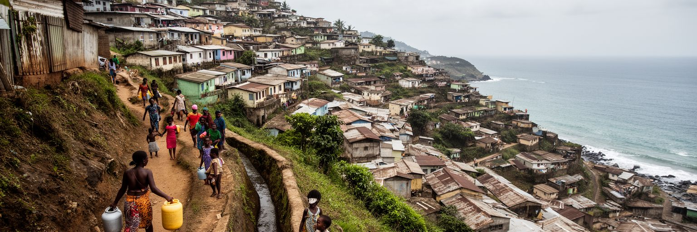
フリータウンの住まいは、海岸の低地から丘陵の斜面まで広がっています。中心部に近い場所ほど仕事や市場へ行きやすい一方で、土地と家賃は高く、低所得の世帯は谷筋や急な斜面、インフラが弱い地域に住むことがあります。水道、排水、トイレ、電力、道路、学校、診療所への距離は、生活の質を大きく分けます。雨季にはぬかるむ道、崩れやすい斜面、流れ込む泥水が通勤や通学を妨げます。家の増築が続く場所では、排水路や道路が追いつかず、火災や救急車のアクセスも難しくなります。住民は親族の助け合い、海外からの送金、近所の労働、宗教共同体の支援を組み合わせて暮らしを保っています。都市の成長は住宅需要を増やしますが、計画的な住宅供給が足りなければ、危険な場所に人が押し出されます。斜面の家から見える海の眺めは美しいですが、その眺めの下には水汲み、階段の上り下り、土砂への不安、交通費の負担があります。住宅政策は、家を建てるだけではありません。排水、斜面保全、道路、学校、医療、土地の権利、家賃の安定を合わせて考える必要があります。フリータウンの暮らしを読むには、港や官庁だけでなく、朝に斜面を下り、夜に荷物を持って坂を上る人びとの時間を見ることが大切です。都市の強さは、こうした日常の移動をどれだけ安全にできるかに表れます。近所の階段や水場も生活基盤です。
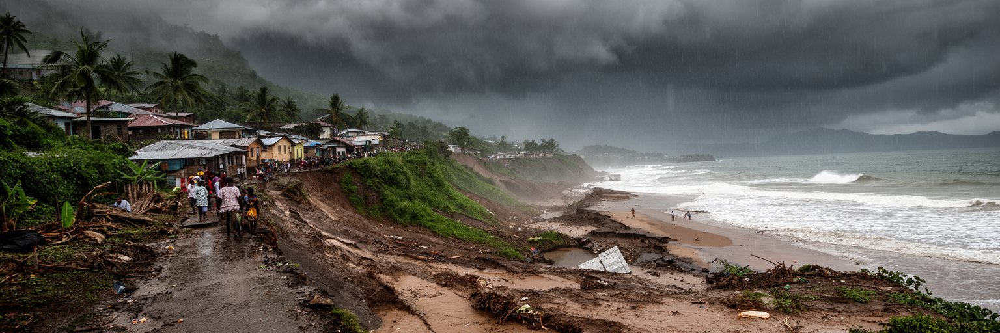
フリータウンの気候リスクは、都市の記憶に深く刻まれています。熱帯モンスーン気候の強い雨は、排水路、谷筋、斜面、港湾道路、海岸低地に一気に負荷をかけます。森林が失われ、斜面に住宅が広がり、ゴミで水路が詰まると、洪水や土砂災害はさらに起こりやすくなります。過去の大規模な土砂災害は、多くの命と住まいを奪い、都市計画、防災、土地利用の弱さを示しました。気候リスクは自然現象だけではありません。安全な土地を買えない人、排水の悪い場所に住む人、情報を受け取りにくい人、避難先がない人ほど被害を受けやすくなります。海岸では浸食や高潮も焦点になり、観光地や漁業、道路、住宅に影響します。対策には、斜面の建築規制、植生の回復、排水路の維持、ゴミ収集、早期警報、避難計画、危険地域からの移転支援が必要です。しかし移転は生活の場所や仕事から人を引き離すため、住民の合意と補償がなければ新たな不安を生みます。フリータウンの防災は、災害が起きた後の支援だけではなく、毎日の都市管理の核心です。雨の前に水路を掃除し、斜面の開発を見直し、学校や市場で避難の情報を共有することが、命を守ります。海と丘に囲まれた美しい首都で暮らし続けるには、地形の危険を正直に認める都市政策が欠かせません。避難訓練と地域の連絡網も、災害時の差を小さくします。
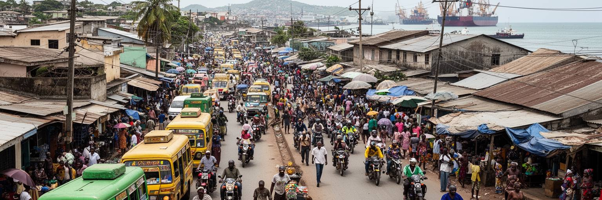
フリータウンの移動は、港、丘、海岸道路、市場、学校、官庁を結ぶ狭い都市空間で成り立っています。バス、ミニバス、タクシー、バイクタクシー、徒歩、フェリー、港湾車両が混ざり、朝夕には中心部の道路が混み合います。地形が急なため、短い距離でも移動は簡単ではありません。雨季には道路の浸水や斜面のぬかるみが移動時間を伸ばし、港湾物流の車両と通勤の人びとが同じ道路を使います。公共空間も限られています。市場前、海岸、教会やモスクの周辺、学校の前、バスターミナルでは、人、露店、車、排水路、荷物が密に重なります。歩道が弱い場所では、子どもや高齢者、障害のある人、荷物を持つ商人にとって移動が危険になります。夕方にはサッカーを終えた若者、買い物帰りの家族、魚を運ぶ人、礼拝へ向かう人が同じ道を使います。交通改善は新しい道路だけで解決するものではありません。歩道、排水、バス停、街灯、横断、交通整理、駐車、港湾車両の動線、災害時の迂回路を合わせて考える必要があります。バイクタクシーは若者の雇用と住民の移動を支えますが、安全、保険、取り締まり、料金の問題も抱えます。公共空間を整えることは、観光客の印象を良くするだけではありません。市場で働く人が雨を避け、通学する子どもが道を渡り、夜に帰宅する人が安心できることにつながります。
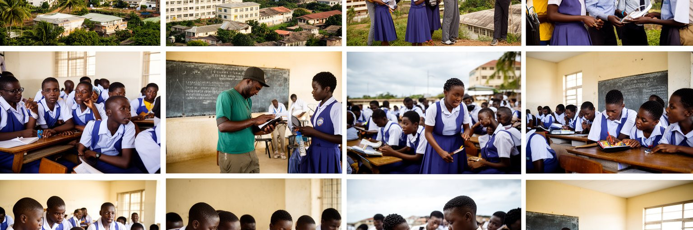
フリータウンは教育と若者の都市でもあります。学校、大学、職業訓練、塾、図書館、宗教系教育機関、NGOのプログラムが集まり、地方から学びや仕事を求めて来る若者も多くいます。内戦後に育った世代にとって、教育は安定した仕事、海外とのつながり、家族への送金、政治参加への入口になります。しかし授業料、教材費、交通費、インターネット、停電、家庭の収入不足は学びを妨げます。学校へ通っても、卒業後に十分な仕事がなければ、若者は非公式労働、バイクタクシー、露店、移住、海外志向へ向かいます。首都にはメディア、行政、港湾、観光、保健、IT、建設の機会がありますが、技能と雇用の橋渡しが弱いと不満は高まります。若者の政治的な熱量は、選挙や抗議だけでなく、音楽、スポーツ、SNS、起業、地域活動にも現れます。放課後のサッカー、ラジオ番組への投稿、スマホで広がる音楽動画は、若い世代が街に声を持つ手段です。女性や若い母親にとっては、安全な通学、性暴力からの保護、保育、健康サービスも重要です。教育の質を高めることは、教室の中だけで完結しません。安全に通える道路、明るい街灯、使える図書館、職業訓練、実習先、奨学金、デジタル環境が必要です。仕事が少ない都市では才能が流出しますが、学びと雇用が結びつけば、首都は国家再建の力を育てる場所になります。
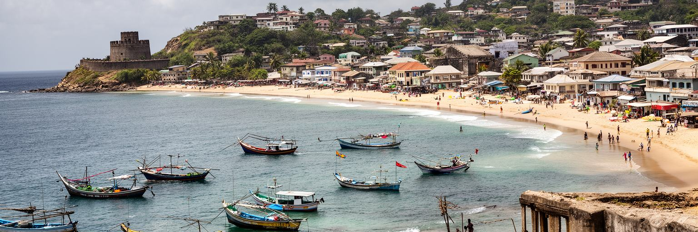
フリータウンの観光は、海岸の美しさと歴史の重さが同居しています。ルムリーや周辺のビーチ、半島の海岸線、島々、漁村の風景は、大西洋岸の開放感を見せます。一方で、バンス島、コットンツリー、キングスヤード門、旧市街の教会や学校は、奴隷貿易、解放、植民地、教育の記憶を訪問者に考えさせます。観光客は海辺で過ごし、市場で食を楽しみ、歴史地区を歩き、フェリーや小舟で島へ向かいますが、その経験はガイド、運転手、漁民、ホテル労働者、清掃員、警備員、土産物売りの仕事に支えられます。観光の成長には、道路、案内、衛生、治安、廃棄物処理、海岸保全、歴史遺産の保存が必要です。ビーチが美しいだけでは、雨季の道路やゴミ、過度な開発、価格の不透明さが旅の質を下げます。歴史遺産を扱う時には、過去の痛みを単なる見世物にせず、地元の研究者、ガイド、コミュニティの声を尊重することが大切です。海岸リゾートだけに偏ると、都市の市場、宗教、音楽、食、教育の厚みが見えにくくなります。フリータウンを旅する価値は、港町の現在と大西洋史の記憶を同時に歩けることにあります。海の眺め、丘の集落、歴史の門、夜の音楽が重なる時、観光は単なる休暇ではなく、都市を深く理解する入口になります。住民に利益が残る観光こそ、首都の文化を守る力になります。小さな宿やガイドにも収益が回る仕組みが必要です。
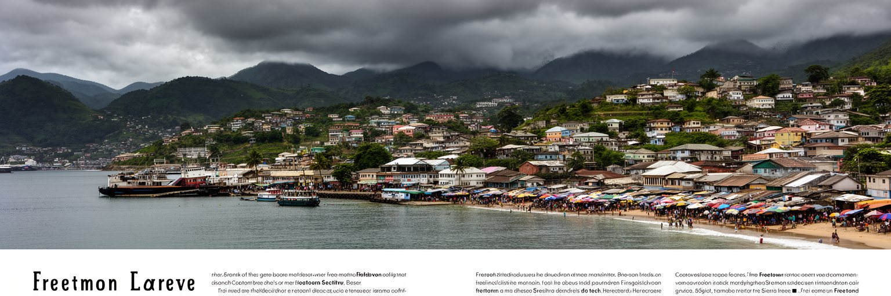
フリータウンを世界都市として読む理由は、経済規模の大きさではありません。天然港、解放奴隷の記憶、内戦後の国家再建、港湾物流、多民族の宗教生活、斜面住宅、若者の雇用、雨季の災害、海岸観光が、非常に近い距離で重なっているからです。巨大な金融都市とは違い、この首都では世界とのつながりが港、援助、移民、歴史、鉱物、感染症対策、気候リスクとして現れます。船が入る港は国の経済を動かしますが、斜面の住宅では水と安全が毎日の課題になります。自由を名に持つ都市は大西洋史の痛みを背負いながら、若い世代の仕事と教育を探しています。観光客が美しい海岸を見る時、同じ海は漁業、輸入、移動、災害の舞台でもあります。フリータウンの強さは、困難にもかかわらず市場、学校、宗教共同体、家族、港の労働が都市を動かし続けていることです。課題は、その粘り強さに頼りすぎず、排水、住宅、交通、教育、保健、雇用を制度として整えることにあります。首都の未来は、高い建物や港の処理能力だけで決まりません。雨の日に子どもが学校へ行けるか、若者が仕事を得られるか、歴史遺産が尊重されるか、危険な斜面に住む人が守られるかで測られます。フリータウンは、港町の美しさと都市の脆さを同時に見せる、西アフリカの重要な首都です。その両面を読むことで、国家の成長が生活の安全へ変わる条件が見えてきます。